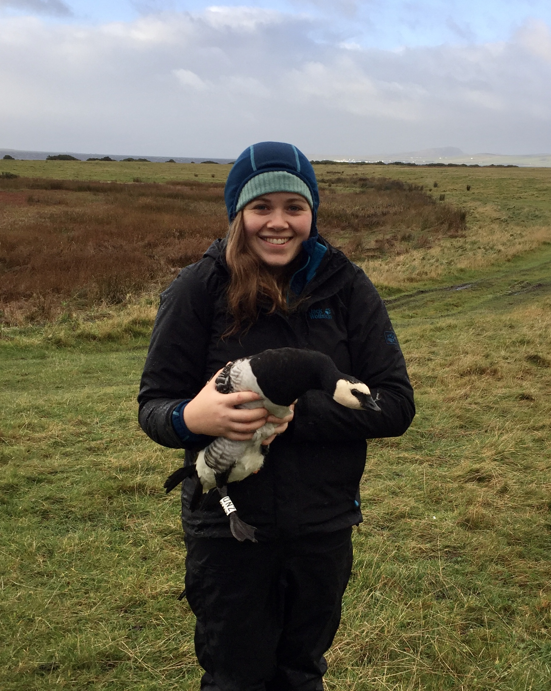
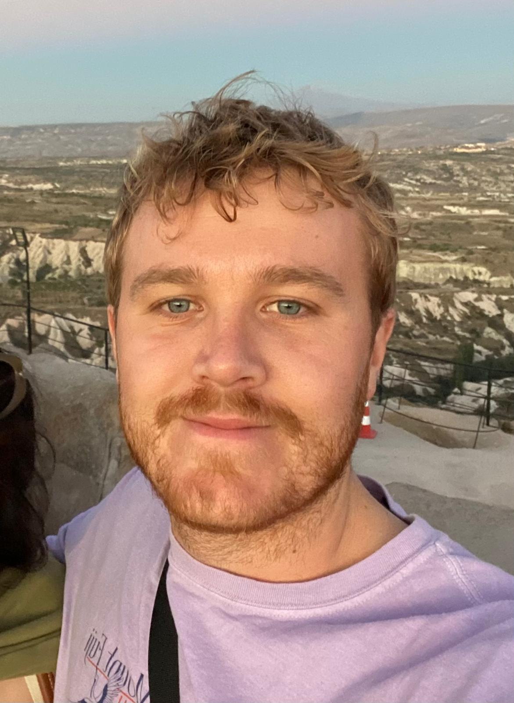
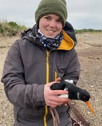
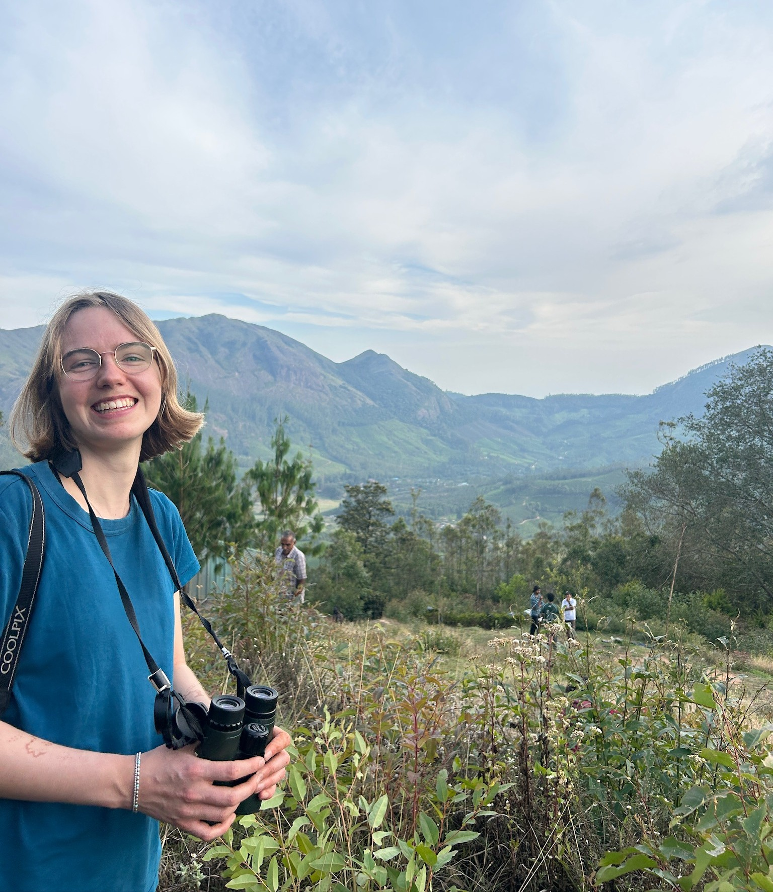
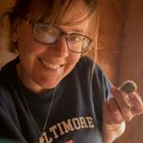
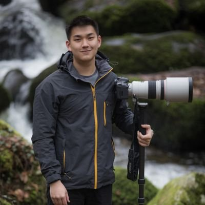
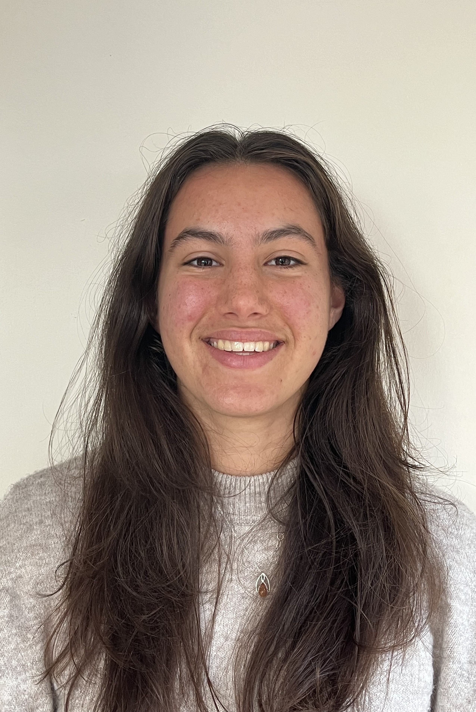

People

Stuart Bearhop
View bio ▼
Stuart Bearhop
View bio ▼
Principal Investigator
About me:
I am an ecologist with a range of interests mainly related to migration and foraging ecology of vertebrates (particularly birds) and the application of stable isotope techniques in animal ecology. I am a member of the Ecology and Conservation research group. I am the Associate Pro-Vice-Chancellor, Global Engagement for the The Faculty of Environment, Science and Economy.
Interests:
My research focuses on spatial and trophic ecology of animals, with a particular interest in the causes and consequences of intra-population variation in movement and foraging behaviours. I also work on applications of stable isotope techniques. My research group works at field sites all over the world: UK, Ireland, Iceland, Iberia, Canadian Arctic, North Atlantic, west Africa, Kenya, Hong Kong, China
Email: S.Bearhop@exeter.ac.uk

Aimée McIntosh
View bio ▼
Aimée McIntosh
View bio ▼
Post Doctoral Researcher
Aimée is an ecologist with a broad interest animal movement, in particular the movement and foraging ecology of migratory species, and how this can be applied to inform conservation and management of these species.
Aimée is currently a Postdoctoral research fellow at the University of Exeter where her research is aims to determine the causes and consequences of variation in physiological transformations of migratory geese funded by NERC.
During her PhD she assessed the impact of shooting management on the movement and foraging behaviour of the East Greenland flyway population of barnacle geese. She also worked with the AEWA European Goose Management Group to develop an integrated population model, to assess the demographic impact of cumulative shooting off take to inform the flyway-scale international management strategy.
Email: a.l.s.mcintosh@exeter.ac.uk

Luke Ozsanlav-Harris
View bio ▼
Luke Ozsanlav-Harris
View bio ▼
Post Doctoral Researcher
I am an ecologist with a broad interest in ornithology, animal movement, and applied ecological research. I am currently a Postdoctoral Research Associate at the University of Exeter, where my work focuses on understanding how birds move through, respond to, and persist in changing environments. Outside of research, I am an active birder and regularly document my observations locally and further afield, with photographs and checklists available on my eBird profile.
Email: l.ozsanlav-harris2@exeter.ac.uk

Steph Trapp
View bio ▼
Steph Trapp
View bio ▼
Research Assistant Steph recently completed a PhD to understand the drivers and consequences of winter movement patterns and habitat use in wading birds, particularly the use of urban amenity grasslands in north Dublin. Her PhD was funded by Fingal County Council and involved GPS tracking four species of wading bird in and around Dublin Bay Biosphere.
Email: st553@exeter.ac.uk

Lucy Williamson
View bio ▼
Lucy Williamson
View bio ▼
PhD Student
Lucy is a second year PhD student carrying out a joint degree between the University of Exeter and University of Queensland (QUEX). Her research is focused on understanding population-level change in migratory birds over time and deriving strategies for their conservation. Using global citizen science data, eBird, she is researching how population dynamics are related to migratory strategies and anthropogenic change. She has broad interests in migratory species, ornithology, and applied conservation research.
Email: lw829@exeter.ac.uk

Debs Allbrook
View bio ▼
Debs Allbrook
View bio ▼
PhD Student
Debs studies the ecology of Kittiwakes nesting on offshore platforms (in partnership with RSK Biocensus).
Email: dla205@exeter.ac.uk

Vance Mak
View bio ▼
Vance Mak
View bio ▼
PhD Student
Vance Mak is a spatial ecologist and PhD candidate at the University of Exeter. His PhD, “Predicting Regional Vulnerability of Threatened Seabirds to Offshore Wind Energy Developments,” examines the year-round habitat use of black-legged kittiwakes across the North Atlantic. The project aims to evaluate and refine existing methodologies used to assess and mitigate the ecological impacts of offshore wind energy development. A further objective is to identify areas suitable for artificial nesting structures that could deliver net biodiversity gains for seabirds under future climate change scenarios. To ensure that his research is robust and applicable to real-world decision-making, Vance is keen to actively engage with policymakers, industry practitioners, and developers involved in offshore energy planning and management. His broader research interests include animal movement analysis, ecological niche modelling, oceanographic and climate projection modelling, impact assessment, and marine spatial planning.
Email: v.mak@exeter.ac.uk

Kate Mighell
View bio ▼
Kate Mighell
View bio ▼
PhD Student
Kate is a PhD student at the University of Exeter looking at the impacts of insect declines on bird populations. She is interested in understanding if insects are driving the differences between different bird populations and how birds can mitigate insect losses. Her broader interest are drivers of population changes and trophic cascades. Outside of work she is regularly involved in bird ringing.
Email: km961@exeter.ac.uk